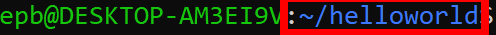

What Does The Bash Shell Show?
This entire window is known as the shell prompt
This is the way your terminal informs you that it is available to input the next command
The shell prompt is split into different sections that help you identify certain information.
-
root:
This is your username, the name of your administration account after Linux is installed.
However, other accounts that are logged in to the Linux system but without the administration authorization, the
root will instead display \$.
-
localhost:
Here is your Linux distribution’s hostname.the hostname is the name your
distribution gives itself, but also the port your Linux will connect to. (Unless connected to a
server/ip, localhost will always be displayed as the hostname)
-
~:

Following the colon is the name of the directory that you are currently in. directories
are the folders your Bash Shell is currently looking in. If on Windows or MacOS, this is essentially the same
as opening the Desktop, the documents folder, or any other folders on your computer.
-
~
On first log in, the Bash Shell will always be inside the home directory. To show that you
are in the home directory, the tilde (~) before the colon is a shortcut for the path of the home directory.
-
#
The pound punctuation (#) marks the end of the shell prompt text. If you enter in a command,
the start of your command will appear after the #. Any valid Linux shell command can be entered at the blinking cursor.
Starting Commands
There are a lot of commands to use in Linux, but there are some that you want to learn before anything else.
With these, you will be able to navigate and create new files and directories on your PC.
cd (directory name)
This command lets you move from one directory to another. However, when changing between directories, you have to remember
to type the entire directory. For example, a folder called preset on your desktop would have the directory of desktop/preset.
Inputting just cd will bring you to the root directory.
mkdir (new directory name) rmdir (directory name)
The mkdir command will create a new directory(folder) in whichever directory the user has placed themself in.
In parallel,
rmdir is the command used to delete a directory.
pwd
Pwd prints the current directory that you are in. So for example, if you are in the folder preset on your desktop,
entering the pwd command will show Desktop/Preset.
ls
The ls command will list every file, folder, or program that is inside your current directory. This is very useful to
help you figure out where a file may be if you know the name of it, or if you aren't sure if you are in the right directory
with everything you're looking for.
touch (file)
The touch command allows you to create a file inside the directory you are currently in. It can create any empty file
such as a .txt file or an empty .zip file.
rm (directory / file name) / rm -r (directory name)
Deleting files on linux is as simple as rm followed by the file or directory name. if you wanna delete a directory and all
the files contained inside, rm (directory name). However, if you want to just delete the directory without wiping the files
as well, rm -r (directory name) will delete the directory but move all the files into whichever directory you are currently in.
mv (filename) (new name)
The mv command can be used to change a file or directory name. Just input the original file name first followed by the new name you
wish to input and you're done!
cp
The cp command will let you copy a file into a different directory within the command line. Taking two inputs, cp requires the name of the file
in the directory that you are in, followed by the directory that you wish to copy it to.
man & --help
If you wanna learn more about a command that you don't normally use or don't fully understand, enter the man command followed by
the command that you don't understand. For example, typing
man cd will show the manual pages for the cd command. Or, you can type
the command name followed by
-help to see the same manual pages.
locate
If you can't remember the name of a file or where you saved it, the locate command is a nifty command to find your file. If
you know a word or two contained inside the document, you can find the file with just that! By using the -i argument along with
the command, you ignore the case of the text (uppercase or lowercase). So, if you're looking for a file that you know contains the word
"amazing", you type
locate -i amazing. If you know more than one word, just add asterisks between the words. That would look like
locate -i *amazing*food*
Pwd prints the current directory
Cd takes you to the root directory
ls lists everything inside your current directory